12 bucket / 고유 11행 / 빈 0 bucket. 사전 고정 최소 sample_index, 대체 없음. 재사용 SOURCE DEV이며 blind/current 평가가 아니다.
원 q/L/native와 actual image를 유지했다. SYN witness0와 YCB associated-r/native UNKNOWN는 별도 교사다. 원q cyan·다른q green·원U gray; validity는 visibility gold가 아니다. GT reference/pose/ownership 또는 attention gold 표시를 쓰지 않는다. 새 head/encoder forward·학습은 없다.
V238 V1은 실행 전 QA 순서 수리였고 V2 실제 시도는 descriptor 검사에서 optimizer0/DEV0으로 종료됐다. V239는 동일 canonical 특징으로 양팔을 각각 새로1000회 학습하는 별도 대조이며, 이 gallery는 실제 완료·양 최종 freeze·전체 바이트 QA·저장 보고서 뒤에만 생성된다. 기존 CONTROL 재사용이나 새 모델 forward는 없다.
픽셀 전 봉인 ID · 좌표·입력/PNG SHA · CSV
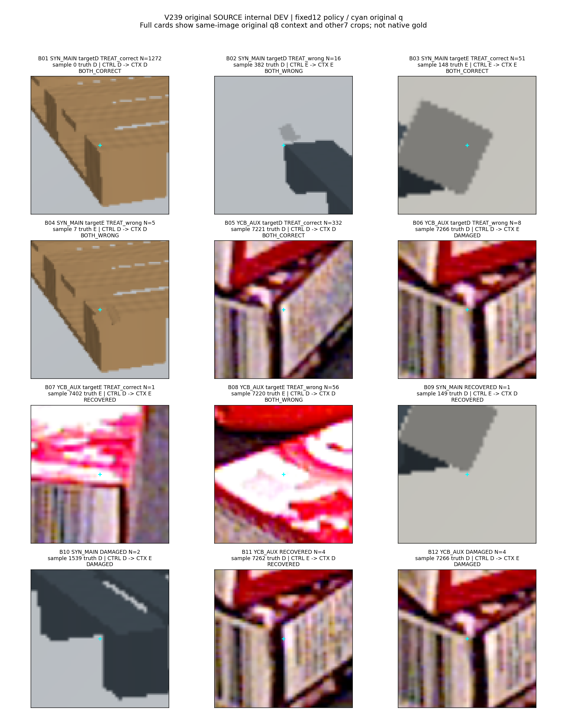
V183_SELF_0000_NATIVE0_NOMINAL
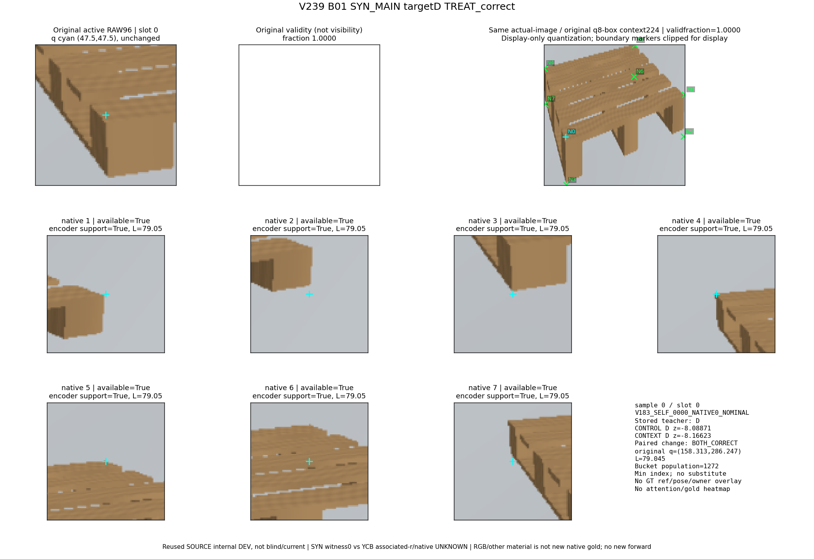
V183_SELF_0054_NATIVE4_NOMINAL
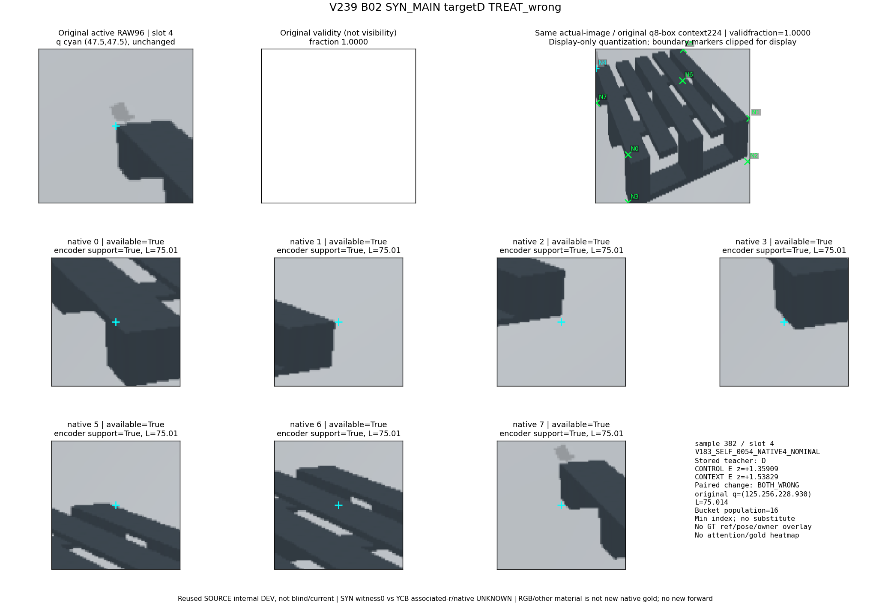
V183_SELF_0021_NATIVE1_NOMINAL
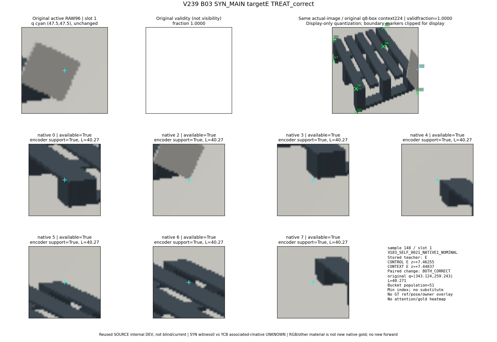
V183_SELF_0001_NATIVE0_NOMINAL
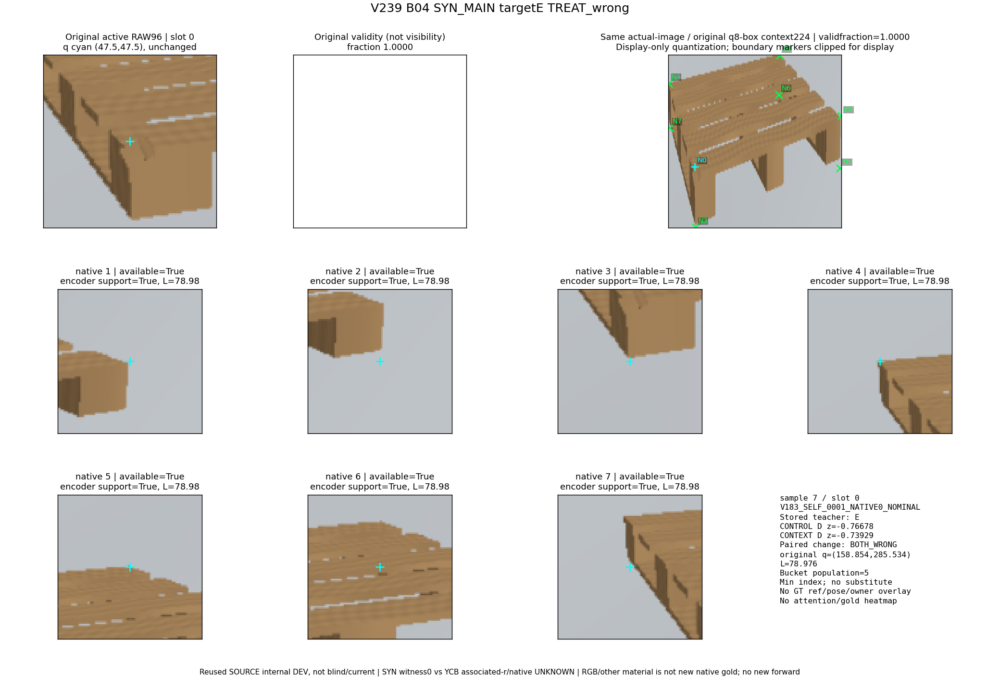
Y109_SOURCE_000700:aux5
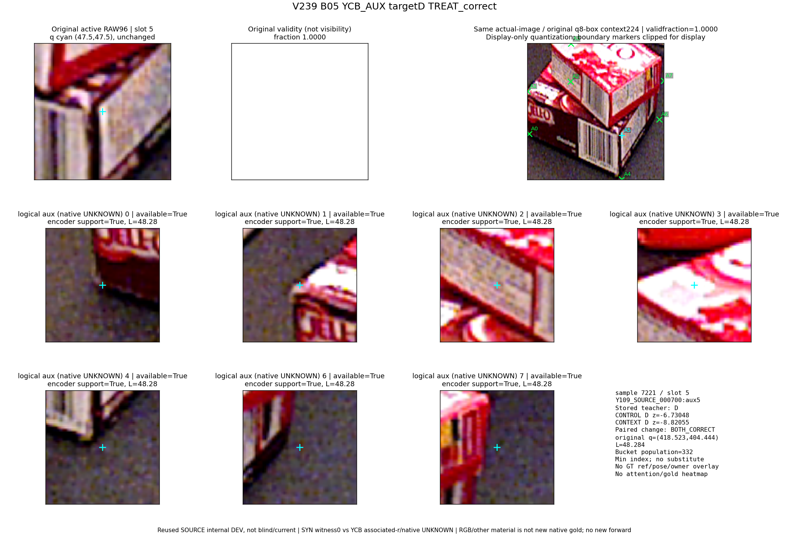
Y109_SOURCE_000722:aux5
Y109_SOURCE_000814:aux7
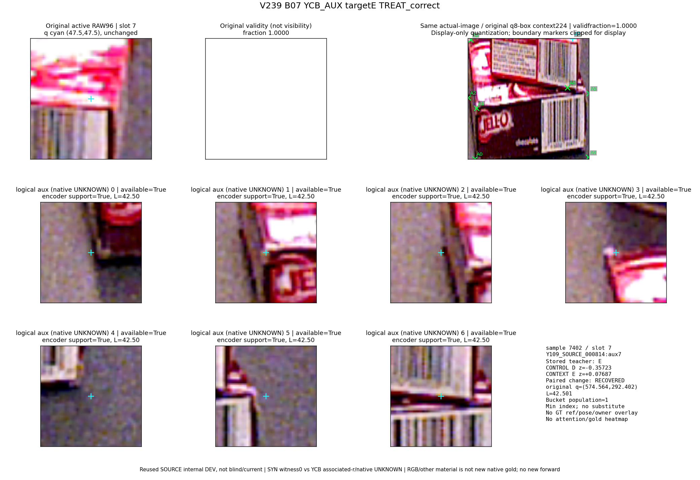
Y109_SOURCE_000700:aux3
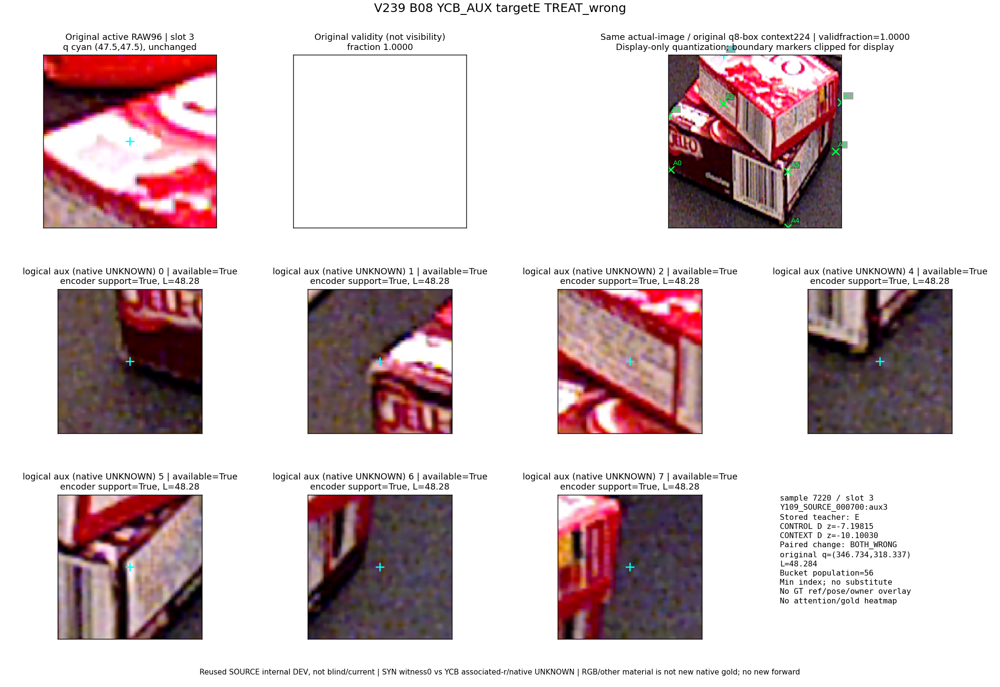
V183_SELF_0021_NATIVE2_NOMINAL
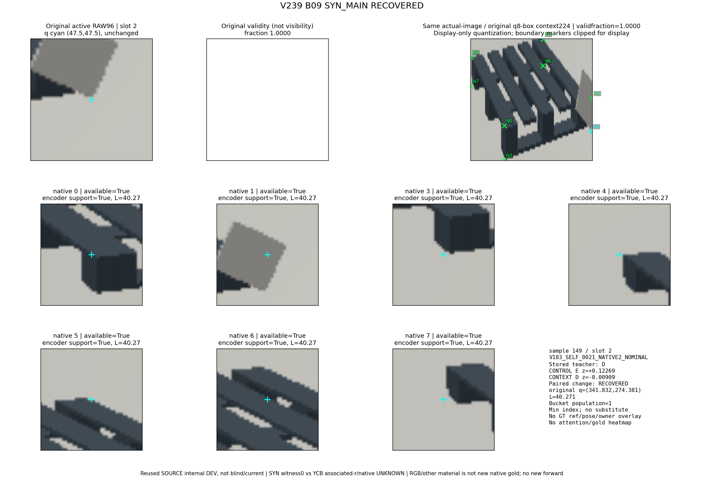
V183_SELF_0245_NATIVE0_NOMINAL
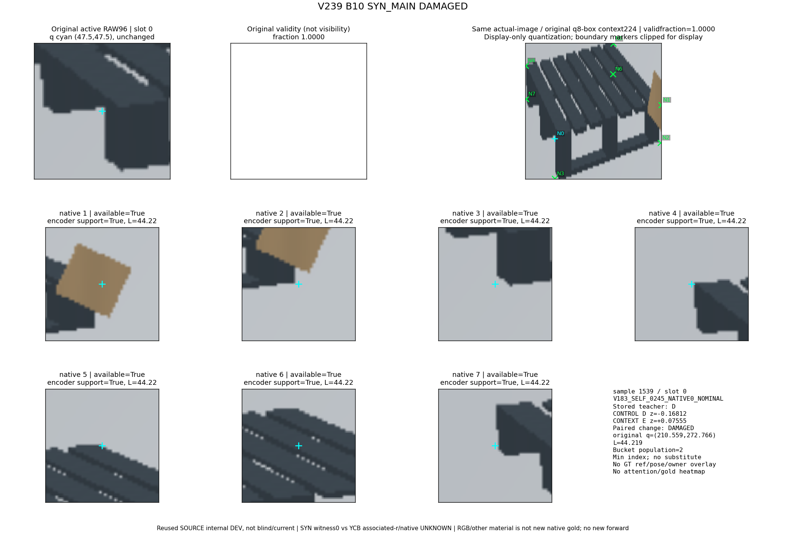
Y109_SOURCE_000720:aux5
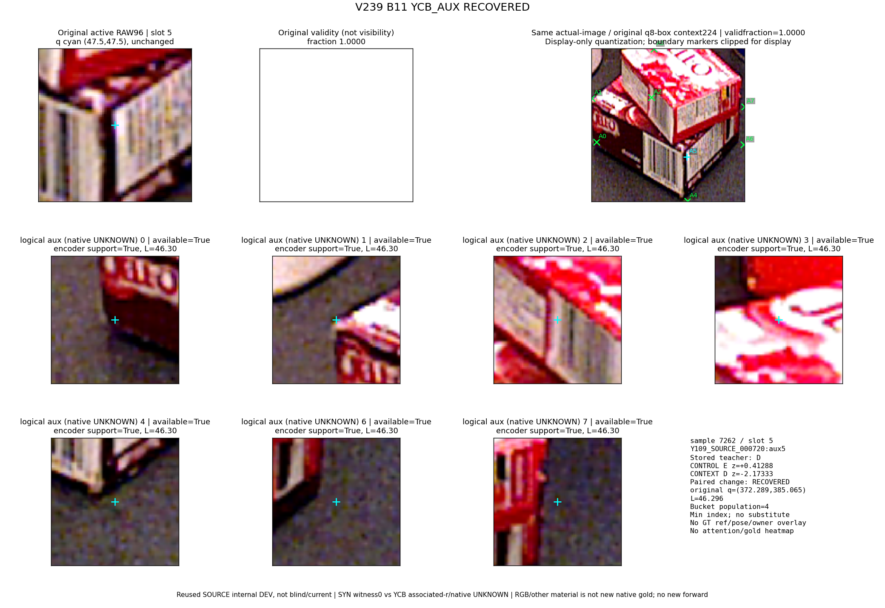
Y109_SOURCE_000722:aux5
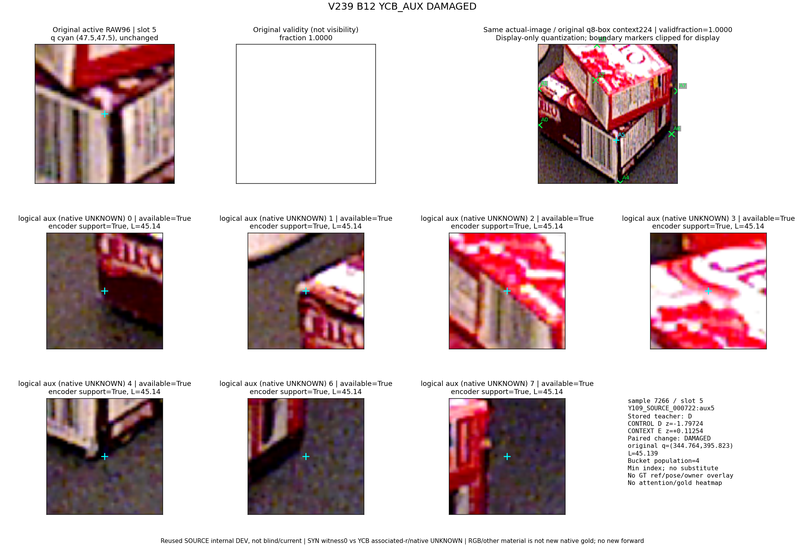